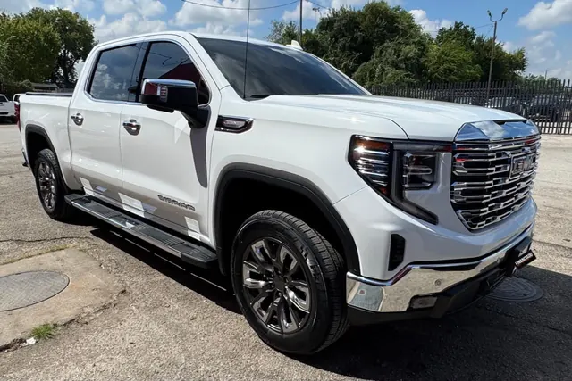

2023 GMC Sierra SLT
White • ID CCH-08

1/2General
| Year | 2023 |
| Make | GMC |
| Model | Sierra SLT |
| Type | Truck |
| Color | White |
| Mileage | 35,000 miles |
| Seats | 5 or 6 seats |
Engine & transmission
| Engine | 5.3L EcoTec3 V8 |
| Power | 355 hp |
| Torque | 383 lb-ft |
| Transmission | 10-speed automatic |
| Drivetrain | To be confirmed |
| Fuel | Gasoline |
Capacities
| Max towing | 9,200 lbs |
| Payload | 2,272 lbs |
| Fuel tank | 24 gallons |
| Fuel economy | 16/20 MPG (city/highway) |
Dimensions
| Length | 231.92 inches |
| Width | 81.24 inches |
| Height | 75.51 inches |
| Wheelbase | 147.43 inches |
Body
| Cab | Crew Cab |
| Bed | 5.8 ft (short bed) |
| Stock wheels | 20 inches |
Visible in the photos
- Crew cab
- Running boards
- Chrome grille
- Tow hitch
Great for
Work during the week and family on the weekend, with a more polished look.
Specs for this model/trim per manufacturer and automotive media. Confirm this unit’s exact specs with the dealer.
Motor de serie del trim SLT según TrueCar (5.3L V8, 355 hp / 383 lb-pie, automática de 10). Tracción no confirmada: RWD de serie, 4x4 opcional.
SLT solo se ofrece con Crew Cab. Se asume 4WD (tracción de la unidad no verificada; la 2WD es 16/21 MPG y remolca 9,400 lbs). Payload calculada con GVWR 7,100 y peso en vacío 4,828 según fichas de concesionario. / SLT only comes as Crew Cab. 4WD assumed (unit's drivetrain unverified; 2WD is 16/21 MPG and tows 9,400 lbs). Payload calculated from 7,100-lb GVWR and 4,828-lb curb weight per dealer listings.